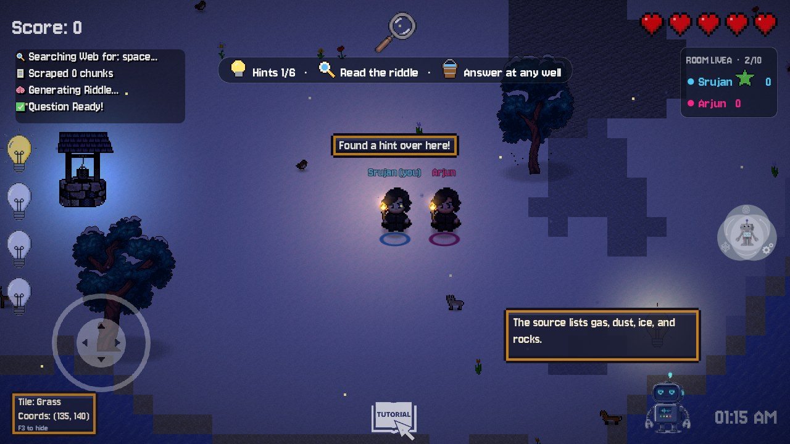
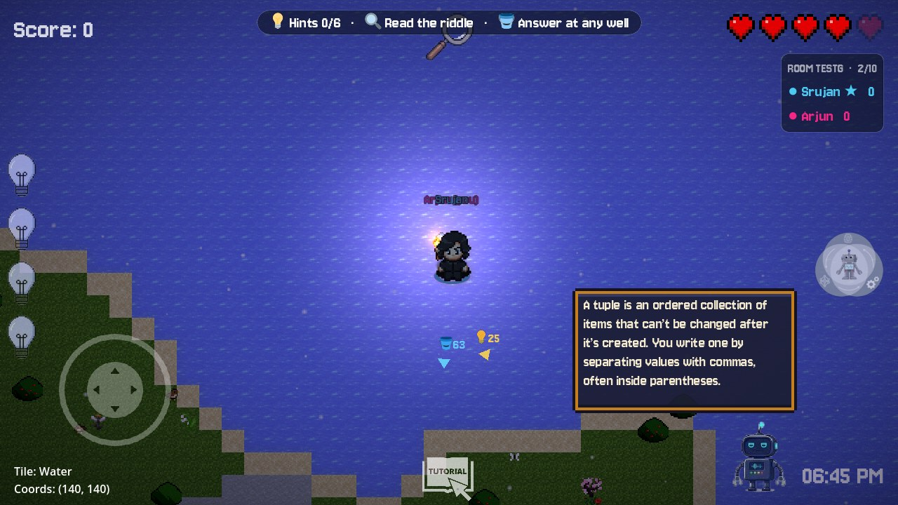
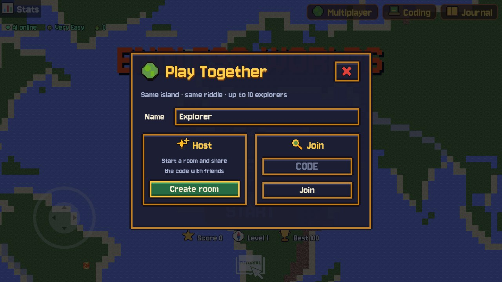
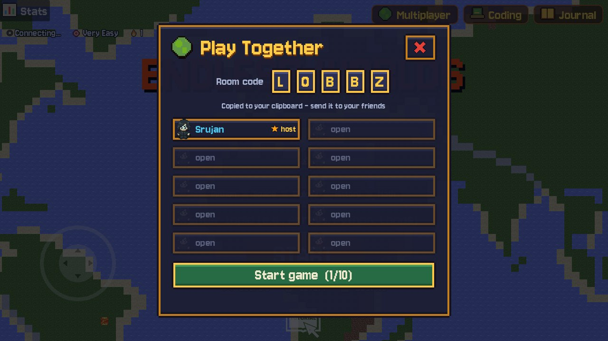

Up to 10 explorers share one world, one riddle and one race to the well. One player's laptop runs the game logic and the AI, and a free Cloudflare relay connects everyone, wherever they are.

Host (Srujan) · connected through the live Cloudflare relay
Guest (Arjun) on another instance · same world, same hint, same chat, same scoreboard
ENDLESS WORLDS1
The big picture
One host, one relay, many players
The relay is deliberately simple: it only forwards messages. The host's laptop does the real work (world seed, riddle generation, round flow), as in a LAN game, without anyone touching router settings.
ENDLESS WORLDS · MULTIPLAYER2
Joining a room
Five letters and you're in
The host's game makes a 5-letter code (no confusable 0/O/1/I). The relay names one Durable Object after it, so everyone with the code lands in the same room on Cloudflare's network.
ENDLESS WORLDS · MULTIPLAYER3
One round, step by step
Shared riddle, shared hints, first answer wins
Answering stays personal
Each player opens a well and answers in their own popup (MCQ, Wordle, Whack, KBC…). A wrong answer costs only your hearts.
Nobody gets kicked
Lose all hearts online and you respawn after 3 s with a −15 score penalty. The round goes on.
Leaving is clean
Guest leaves → "X left" banner. Host leaves → relay closes the room and everyone returns home with a message.
ENDLESS WORLDS · MULTIPLAYER4
Why every screen shows the same island
Send a seed, not a map
The island is 280×280 tiles plus wells, trees and flowers, roughly 80,000 cells. Sending all of that would be slow. Instead the host sends one number.
seed(round.seed) runs before terrain, biome, wells, trees, flowers and the spawn pad, so the same code with the same seed builds the same world.
Hint bulbs are placed after the riddle arrives with seed + 1, so every player sees them in the same spots.
Then randomize() again, so cosmetic things (birds, rain, flicker) stay lively on each screen.
Cost: ~60 bytes to start a round instead of megabytes.
1
number syncs the world
12/s
position updates, only when moving
~1/s
heartbeat when idle
Guest view: the host is the blue ring, the guest the pink one. Terrain, trees and wells match the host's screen exactly; the chat bubble, the shared hint (1/6) and both torches came over the relay, and the two torches share one light instead of glaring.
ENDLESS WORLDS · MULTIPLAYER5
What travels over the wire
Thirteen small JSON messages
Type
Who sends
Fields
When
welcome
relay → joiner
id, peers[]
on connect
join / leave
relay → room
id, name
someone arrives / drops
error / host_left
relay → player
msg
full room, bad code, host quit
start
host → all
seed, qtype, topic, round
new round
riddle
host → all
riddle, options, solution, hints, fact
once per round
pos
everyone
x, y, anim, frame, flip, score, torch
12 Hz while moving, ~1 Hz idle
hint
whoever grabbed it
idx
bulb collected
chat
anyone
text (≤120 chars)
press T
won
the winner
name, answer
correct answer
api / api_reply
guest ⇄ host
path, base64 body / code, body
guest talks to Bolt
The relay overwrites from on every message, so a client can't pretend to be the host. Messages over 768 KB are dropped (enough for a 12-second voice clip).
ENDLESS WORLDS · MULTIPLAYER6
Voice for guests
The host's laptop is everyone's AI
Guests can talk to Bolt without installing Python: their audio rides the relay to the host, whose server transcribes and answers it.

Tested end-to-end
A spoken question ("Hey Bolt, what is a tuple in Python?") was fed into a guest instance. The host's server logged /api/transcribe 200 then /api/rag 200, and the guest's Bolt displayed and spoke the answer.
Worker + SQLite-backed Durable Object, both available on the Workers Free plan
WebSocket Hibernation API: an idle room costs nothing while sockets stay open
Incoming WebSocket messages are billed at 20 : 1 against the request quota, and outgoing ones are free
Back-of-envelope traffic
Room
msgs / s (moving)
billed req / hour
2 players
24
≈ 4,300
5 players
60
≈ 10,800
10 players
120
≈ 21,600
Worst case: everyone moves non-stop at 12 Hz, ÷20 billing ratio. Standing still drops to ~1 msg/s per player. Check Cloudflare's current free daily request quota on the Durable Objects limits page; going over it fails requests for the rest of the day and never bills you.
Deploy in two commands
cd relay → npx wrangler login → npm run deploy, then put RELAY_URL=wss://…workers.dev in .env.
ENDLESS WORLDS · MULTIPLAYER8
Robustness & testing
What was checked
Relay test suite
room-not-found for guests without a host
host gets id 1, guests 2…10
broadcast + sender stamping (spoofed from ignored)
direct messages reach only their target
11th player rejected: "Room is full"
leave + host_left delivered
Passed locally (wrangler dev) and on the live worker.
Game-level runs
3 instances in one room, AI riddle shared
hint grabbed by host appears taken for guests
guest wins → "You solved it" / "Arjun solved it"
host auto-starts round 2 for everyone
late joiner catches up mid-round
two packaged .exe builds over the live relay
Known limits
Host quits → room ends (no host migration)
Only the host needs the AI server; without it, the offline question bank is used
Builds carry only the relay/API URLs; API keys stay with the host's AI server
ENDLESS WORLDS · MULTIPLAYER9
For players
Play together in 60 seconds
Host
(Optional) run start_server.bat for live AI riddles + voice
Open the game → Multiplayer → type your name → Create room
The code is copied: send it to friends
Press Start when everyone is listed
Guests
Unzip and open EndlessWorlds.exe
Multiplayer → name → type the code → Join
Wait for the host to start, then race to the well!


Lobby: host or join with a code · room view with code tiles and 10 player slots